git多人协作
Git 多人协作案例
远程分支可以推送
小黄和小蓝在都要在远程master分支下写作
- 两人通过
git clone拷贝远程仓库. 这时本地会有两个分支origin/master和master
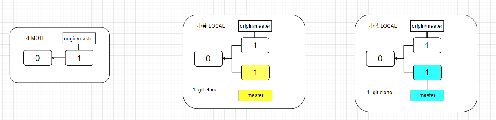
- 小黄在
master他的本地分支上提交了修改commit2, 同时小蓝也在master他的本地分支上提交了修改commit3
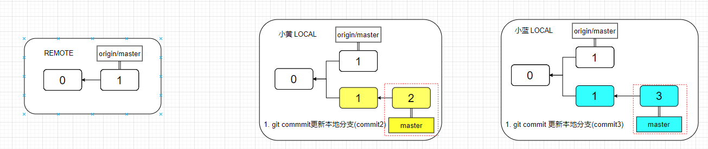
- 小黄执行
git push更新了远程仓库
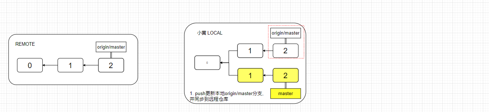
-
- 小蓝执行
git push报错, 所以使用git fetch拉取远程仓库
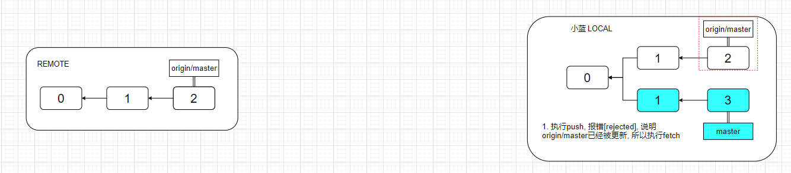
- 小蓝执行
git merge origin/master合并远程最新的更新
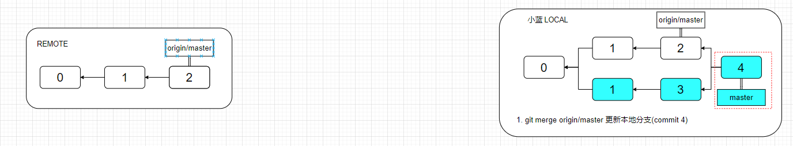
- 小蓝执行
git push更新远程仓库
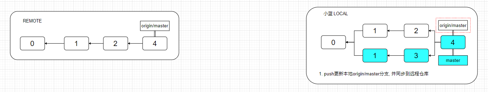
- 小蓝执行
远程分支受保护,不可以推送
master分支受保护, 不允许开发人员直接push, 而是由管理人员在远程仓库操作. 所以小红和小蓝要新建分支进行写作.
- 两人
git clone复制远程仓库
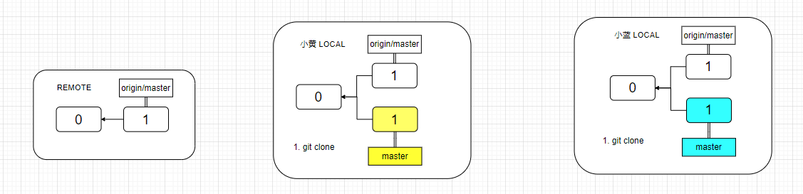
- 小黄在本地创建新的分支
featureA(origin/master副本)git checkout -b featureA origin/master, 小蓝在本地创建新的分支feature1git checkout -b feature1 origin/master
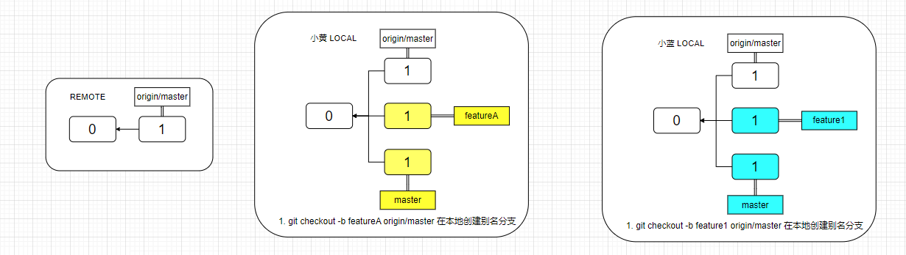
- 小黄在本地
featureA分支提交commit2, 小蓝在本地featureB分支提交commit3
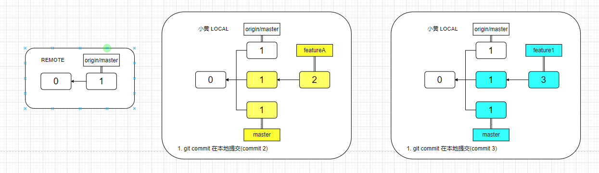
- 小黄将本地修改
git push到远程, 注意远程没有featureA分支, 所以会自动创建
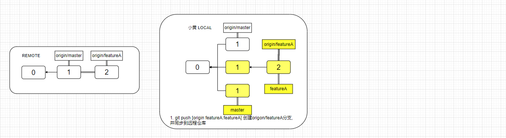
-
- 小黄告诉小蓝, 已经
featureA已经开发完成, 需要小蓝这边也集成到featureA. 小蓝执行git fetch(如果执行git push 则远程会多一个feature1的分支)
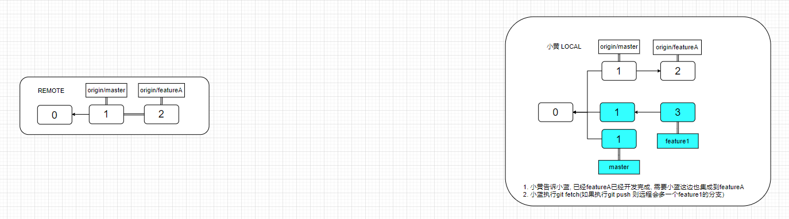
git merge origin/featureA小蓝合并小黄更新的分支
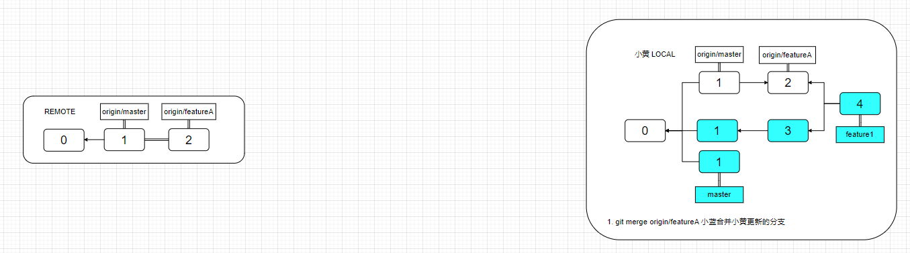
git push origin feature1:featureA将feature1推动到origin/featureA更新本地origin/featureA分支, 并同步到远程仓库
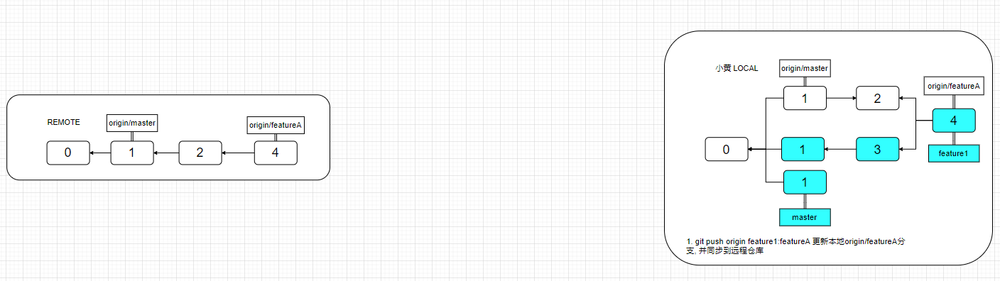
- 小黄告诉小蓝, 已经